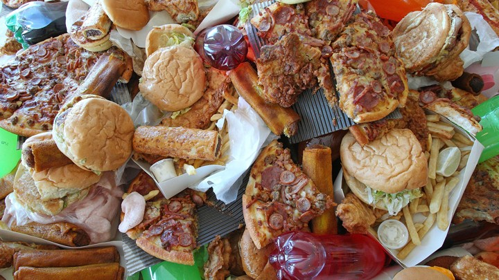

Anorexia Nervosa
Anorexia nervosa is a mental health condition where the affected person has an overwhelming fear of gaining weight, and an unrealistic view of body image. They generally see themselves as overweight, even when they are clearly underweight. People with anorexia nervosa will severly limit the calories that they are consuming, which could end in multiple organ failures, or even death.
Anorexia nervosa is divided into two categories, restricting type and binging/purging type.
Restricting type
People with the restricting type tend to restrict the food they eat, and attempt to lose weight by consuming less calories, or exercising.
Binging/Purging type
Someone with the binging/purging type would remove the food from their body after every meal by vomiting, using laxatives, or exercising excessively. This lessens the guilt of consuming any types of food they believe are unhealthy or restricted.
Some signs that someone may have anorexia nervosa include:
Bulimia Nervosa
Bulimia nervosa is characterized by consuming a large amount of food in a short period of time, before purging it afterwards. During the binging episodes, the person feels unable to control the amount of food they eat, and are only able to stop after they become extremely full. To relieve themselves of the guilt from binging, people with bulimia nervosa often purge afterwards, by puking, using laxatives, or exercising.
Some general symptoms include:
Binge Eating Disorder
Similar to the bulimia nervosa, binge eating disorder is a mental disorder in which people eat large amounts of food in a period of time. The difference between binge eating disorder and bulimia nervosa is that people with binge eating disorder don’t purge the food they consumed. As a result, most with the disorder end up overweight or obese. They generally feel embarrassed of their binging periods, but are unable to control it and end up binging again.
Some symptoms of binge eating disorder are: